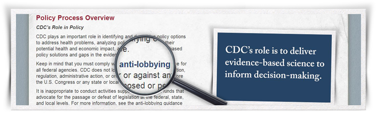

Want to Know More?
The course provides plenty of opportunities for you to learn more about each topic through the use of selectable elements that lead to supplemental information. The button you just clicked on is an example of a selectable element, and this pop-up window is one way the additional information may be presented. The information could also appear as audio narration or video.
Selectable images include an icon of a pointing hand, like the one that appears on the button you clicked to open this window.
Selecting text that appears in a bold, blue font (as shown in the image below) leads to more than just a simple definition. Often, the supplementary information includes a specific example, table, or explanation that can help clarify a concept.
